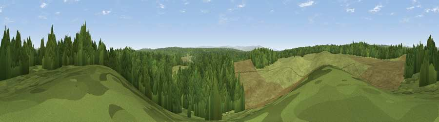

Viewpoint c11541_7484
#17429 in England · top 43% of its area beats it · —Where it is
The exact computed spot (NY 74225 77075). Click the marker for map links.
The view, rendered

A 360° render of this exact spot computed from the terrain model, tree cover and land cover — summer colours, afternoon light, calibrated against photographs of famous viewpoints. Real trees, hedges and buildings will differ in detail.
The panorama
Grey silhouette: terrain skyline in each direction (720 bearings, Earth curvature and refraction included). Dashed green: skyline with trees (+15 m) and buildings (+8 m) as obstacles. Blue strip: how far the ground is visible on each bearing.
Where the view opens
Wedge length = distance to the farthest visible ground on that bearing (vegetation-aware). Rings at 10, 25 and 50 km.
What fills the view
54% woodland · 46% grassland
Angular shares of the visible panorama (visual magnitude), not map area. Landscape diversity 0.30 (0–1 Shannon).
Key numbers
More beautiful places nearby
The staircase of upgrades: each row has a higher view potential than everything closer. Driving times are estimates from straight-line distance, calibrated against real road routing — check an actual route before setting out.
| Place | Direction | Drive | Score |
|---|---|---|---|
| Viewpoint near Greenhaugh | NNE · 6 km | ~13 min | 60.9 |
| Viewpoint c11456_7577 | SE · 6 km | ~13 min | 63.3 |
| Viewpoint near Greenhaugh | NE · 7 km | ~14 min | 71.2 |
| Viewpoint c11634_7288 | WNW · 11 km | ~21 min | 71.8 |
| Sighty Crag | WNW · 15 km | ~26 min | 74.7 |
| Viewpoint near Bewcastle | W · 15 km | ~27 min | 76.6 |
| Viewpoint near Bewcastle | W · 16 km | ~28 min | 78.9 |
| Viewpoint c11644_7156 | WNW · 17 km | ~30 min | 80.8 |
55.08744, -2.40534 · source: screening · position refined by local search. Computed location — check access rights before visiting.